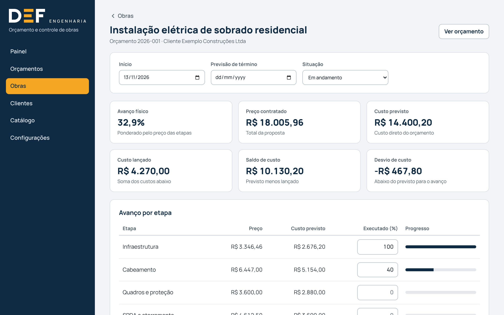

Projetos elétricos
Plantas, diagrama unifilar, quadro de cargas, memorial descritivo e lista de materiais. Baixa tensão, entrada de energia no padrão da concessionária e média tensão.
Engenharia elétrica · Porto Velho, RO
Projetos, laudos e SPDA com responsabilidade técnica. Atendimento em Porto Velho e a distância para todo o Brasil.
Seis frentes de trabalho. Projetos, orçamentos e o sistema são feitos a distância para qualquer estado.
Plantas, diagrama unifilar, quadro de cargas, memorial descritivo e lista de materiais. Baixa tensão, entrada de energia no padrão da concessionária e média tensão.
Levantamento de materiais e mão de obra a partir do projeto, com planilha de custos por etapa e cronograma físico-financeiro.
Laudo de instalações elétricas, relatórios de inspeção para a NR-10 e documentação técnica para seguradoras, condomínios e licenças.
Análise de risco, projeto, inspeção e laudo do sistema de proteção contra descargas atmosféricas, pela NBR 5419.
Execução, adequação de instalações existentes, montagem de quadros e acompanhamento técnico da obra.
Sistema próprio de orçamento, controle de custos e acompanhamento de obra, usado em cada serviço da DEF Engenharia.
Quatro passos, do primeiro contato à entrega.
Você conta o que precisa e envia a planta ou as fotos. Quando é preciso, a visita técnica é marcada com hora.
Você recebe a proposta em PDF com escopo, prazo, preço e condições de pagamento.
O projeto, o laudo ou a obra segue as normas técnicas e tem a ART registrada no CREA.
Você recebe os documentos finais e, em obras, o acompanhamento do avanço e dos custos.
Projeto elétrico, entrada de energia e orçamento fechado antes de a obra começar.
Projeto elétrico e de SPDA como complemento do seu projeto, em qualquer estado.
Laudos, documentação da NR-10, SPDA e adequações em mercados, postos, galpões, clínicas e escolas.
Laudo elétrico, inspeção de SPDA e adequação das instalações comuns.
Cada orçamento da DEF Engenharia é montado em sistema próprio, por etapas, com materiais e mão de obra. Depois da aprovação, o mesmo sistema acompanha o avanço e os custos da obra.

Para pedir um orçamento, você conta o que precisa e envia a planta ou as fotos da instalação. O atendimento é direto com o engenheiro responsável.